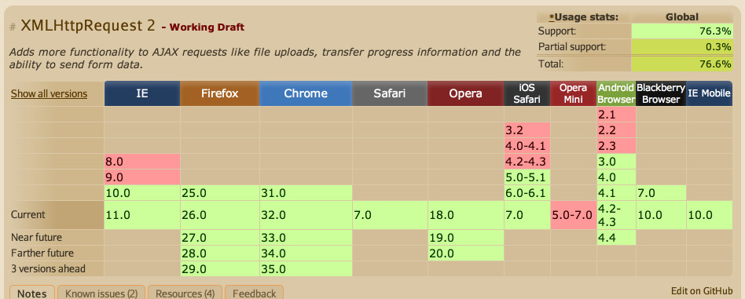
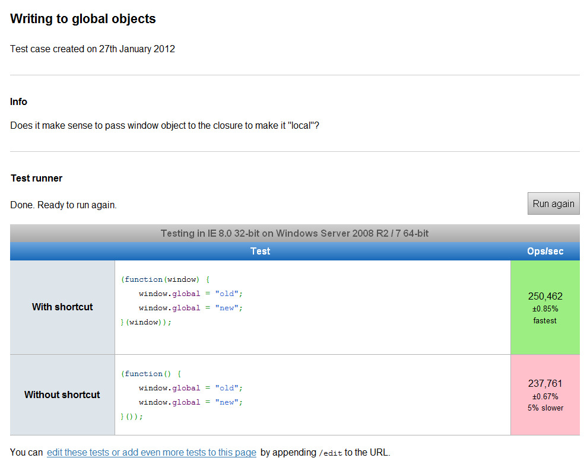
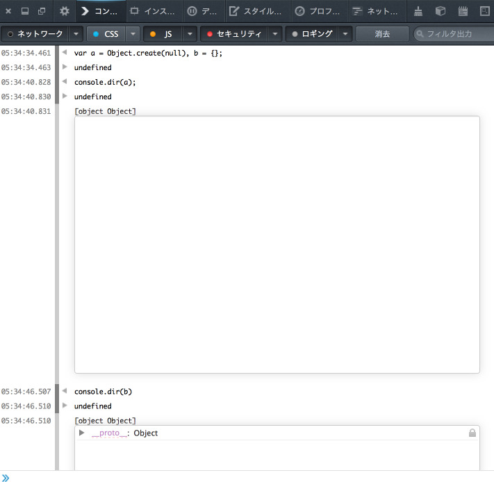
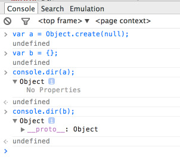

jQuery から卒業するための第1歩を polyfills から学ぼう – その2
| lastmod:
この記事は書かれてから1年以上が経過しており、最新の情報とは異なる可能性があります
前回からの続きです。 jQuery から卒業するための第1歩を polyfills から学ぼう
https://github.com/inexorabletash/polyfill にある web.js をソースコードリーディングしています。 また、es5.js は予め読み込まれている前提となります。
XMLHttpRequest（XHR）
いわゆる Ajax の核となる API です。
http://ja.wikipedia.org/wiki/XMLHttpRequest
例えば、jQuery を用いてファイルを非同期で取得する場合、 以下のように書いた経験があるかもしれません。
$.ajax({
type: "POST",
url: "some.php",
data: { name: "John", location: "Boston" }
})
http://api.jquery.com/jQuery.ajax/ の Examples からの引用です。
この $.ajax の内部で使われているのが、window.XMLHttpRequest ですね。
window.XMLHttpRequest は、IE7 から使えるのですが、IE6 以前では使えはするものの、同じ記述ではできません。
23〜37行目を抜粋します。
//
// XMLHttpRequest (http://www.w3.org/TR/XMLHttpRequest/)
//
window.XMLHttpRequest = window.XMLHttpRequest || function () {
/*global ActiveXObject*/
try { return new ActiveXObject("Msxml2.XMLHTTP.6.0"); } catch (e1) { }
try { return new ActiveXObject("Msxml2.XMLHTTP.3.0"); } catch (e2) { }
try { return new ActiveXObject("Msxml2.XMLHTTP"); } catch (e3) { }
throw Error("This browser does not support XMLHttpRequest.");
};
XMLHttpRequest.UNSENT = 0;
XMLHttpRequest.OPENED = 1;
XMLHttpRequest.HEADERS_RECEIVED = 2;
XMLHttpRequest.LOADING = 3;
XMLHttpRequest.DONE = 4;
ActiveX について掘り下げると本質的ではなくなってしまうのであまり触れませんが、IE6 で Ajax を実現するためには、ActiveXObject を用います。
try ~ catch を用いて、試しにオブジェクトを作って上手くいけばそれを採用しています。 try 文の中で、すぐに return するように書かれているので、 new ActiveXObject 部分に問題がなければそのまま function の処理が終わります。 （逆に問題があれば “Illegal return statement” などの SyntaxError が起きますが、catch 文でそのままキャッチアンドリリースしちゃってるので、実際何も起きません。）
その後、XMLHttpRequest オブジェクトに対して、 必要な定数（正確には大文字なだけでただの変数ですが、定数として見なして使っています）を 定義しています。
このあたりの話はかなり使い古されており、もうすでに caniuse.com にすら項目として掲載されていないくらい当たり前の手法となっています。詳しくは以下などをご覧ください。
http://ja.wikipedia.org/wiki/XMLHttpRequest#.E5.88.A9.E7.94.A8.E6.B3.95
なお、XHR という略は本当によく使うので、 知らなかった人はこれだけは覚えておいた方が良いと思います。 XHR = XML Http Request です。
XMLHttpRequest Level 2 (XHR2)
上記のパワーアップ版です。
先に42行目、73行目を抜粋します。
if (!('FormData' in window)) {
}
外枠は FormData オブジェクトがあるかどうかで判別をしています。この FormData が一体なんなのか？というのを知るのと同時に、XHR2 でざっくり何が出来るようになったのかを調べてみます。

IE10, iOS5.0, Android3.x, 4.x 以降、その他モダンブラウザで使えるようになったものですが、 ファイルアップロード時の進捗を取れたり（progress）、クロスドメインのリクエストなどが出来るようになりました。
その他にも、フォームに入力された情報を FormData オブジェクトとして XHR オブジェクトにそのまま渡す仕組みも導入されています。以下に詳しく載ってますが、サンプルコードだけ抜粋します。
http://www.html5rocks.com/ja/tutorials/file/xhr2/#toc-send-formdata
function sendForm() {
var formData = new FormData();
formData.append('username', 'johndoe');
formData.append('id', 123456);
var xhr = new XMLHttpRequest();
xhr.open('POST', '/server', true);
xhr.onload = function(e) { ... };
xhr.send(formData);
}
最後の xhr.send(formData) で、FormData オブジェクトを引数にして XHR オブジェクトに渡しているのがなんとなく分かると思います。
という感じで、XHR2 の新しい機能みたいなのは大まかには知ることが出来たと思います。
果たして、XHR2 をすべて polyfills として提供できるのか？
ここまで読んで、**全部は無理じゃね？**と気づかれた方もいるのではないでしょうか。
クロスドメインのリクエストなんかは、IE8 では非標準の XDomainRequest を代用して 実現は出来るのですが、IE7 以前でクロスドメインでファイルのリクエストをするのは難しいです。
自分も日々気をつけたいと思っているのですが、polyfills があるから安易に 「クロスブラウザ対応、問題なくできちゃいます！」と判断しちゃうと、 後で痛い目見ることになると思うので注意が必要です。 実際に読んで把握したり試したりするのがやっぱり大事ですね。
さっきの抜粋だと、
if (!('FormData' in window)) {
}
FormData オブジェクトがあるかどうかチェックしているため、 FormData オブジェクトに関する polyfills であることが分かります。
即時関数と jsperf
さらにもう内側、43行目、72行目
(function(global) {
（中略）
}(this));
このように、function （と丸括弧）で挟んでやることで、 引数を渡してすぐにその引数を受け取って実行することが出来るわけですが**（即時関数）**、 this は元々 global であるため、無くてもちゃんと動きます。
何が違うかというと、function の仮引数である global は、function の中だけで有効なローカル変数となっているので、ローカル変数へのアクセスとなり、window オブジェクトへの頻繁なアクセスを避けた方が効率的であるためです。
・・・なんのことを言っているのか分からない人もいると思うので、実際に動かしてみましょう。
jsperf というサイトがあって、検証コードをその場で試して動かすことが可能です。なお、js の performance の略です。 （jsperf に関しては、余裕があればまた改めて記事として書ければなーと思います。）
http://jsperf.com/writing-to-global-objects

IE8 にて動作させた結果のキャプチャです。
そのまま global として扱った場合と、一度即時関数内でローカル変数として扱った場合とでは、IE8 にて約5%のパフォーマンスの差異が出るようです。（もちろんブラウザによって異なります）
なので、こういった頻繁に window オブジェクトにアクセスするようなものは、 予め即時関数でラッピングしてどうこうする、みたいに書かれることが多いですね。勉強になります。
XHR2 の FormData オブジェクトの polyfills
大分寄り道しましたが、中身を読んでいきます。 とはいえ、全部紹介してたらきりがないので、ポイントだけ抜粋します。
44〜49行目の抜粋です。
function FormData(form) {
this._data = [];
if (!form) return;
for (var i = 0; i < form.elements.length; ++i)
this.append(form.elements[i].name, form.elements[i].value);
}
new するための FormData オブジェクトを用意しています。 そもそもの FormData オブジェクトの使い方として、引数に HTMLFormElement を取ることが出来るので、引数が無ければそのまま return、あれば append を呼ぶ、となってます。
続いて51〜55行目です。
FormData.prototype.append = function(name, value /*, filename */) {
if ('Blob' in global && value instanceof global.Blob) throw TypeError("Blob not supported");
name = String(name);
this._data.push([name, value]);
};
後追いでフォームの名前と値を追加できるメソッドを用意しています。XHR2 になって、Blob データも送ることが出来るようになったので、Blob 関連の記述もあります。
63行目です。
global.FormData = FormData;
global のプロパティに紐付けてやることで、即時関数内で定義したものを外からも呼べるようになります。
最後に64〜71行目の抜粋です。
var send = global.XMLHttpRequest.prototype.send;
global.XMLHttpRequest.prototype.send = function(body) {
if (body instanceof FormData) {
this.setRequestHeader('Content-Type', 'application/x-www-form-urlencoded');
arguments[0] = body.toString();
}
return send.apply(this, arguments);
};
ここからは、FormData オブジェクトについてではなく、それに関連した既存の XHR オブジェクトの send メソッドの改良についてです。
元々 XHR には send メソッドがあるのですが、新たに FormData も送ることが出来るようになったので、基本の仕組みはそのまま踏襲しつつも、FormData オブジェクトも受け取れるようにしなくてはなりません。
そこで、まず var send = … として一時的に send 変数に入れておき、 新たに global.XMLHttpRequest.prototype.send として定義して、 FormData オブジェクトだったときの処理を挟みつつ、最後に send.apply で元々の処理を呼んでやるという流れになっています。
・・・とこんな感じで XHR, XHR2 と通信周りを順に読んでみましたが、polyfills を追っていくだけでも色々と勉強になりますね。 いやぁ、けっこう長くなりました。
requestAnimationFrame
お次は requestAnimationFrame です。
HTMLベースのアニメーションは、ほとんどパラパラアニメの仕組みと同じで、 フレームごとに再描画して動いているわけですが、 長らく setTimeout, setInterval などのタイマーを用いてそれが行われていました。
これはもう名前のごとく、アニメーションフレームをリクエストするためのメソッドですね。
詳しい説明はこちらです。
https://developer.mozilla.org/ja/docs/Web/API/window.requestAnimationFrame
これも元々 setTimeout, setInterval があるので、polyfills として問題なく提供できるはずですね。
流れは XHR とほとんど同じで、即時関数にラッピングして最後に global に紐付けする形です。 requestAnimationFrame が global に紐付けされる前までに、即時関数内だけで使われている処理、94行目から106行目を抜粋します。
function onFrameTimer() {
var cur_requests = requests;
requests = Object.create(null);
timeout_handle = -1;
Object.keys(cur_requests).forEach(function(id) {
var request = cur_requests[id];
if (!request.element || isVisible(request.element)) {
request.callback(Date.now());
}
});
}
これは毎フレームごとに呼ばれる関数となっています。 request は、function のすぐ上に requests = Object.create(null); という変数で用意されており、function 内にも全く同じ記述がされています。
proto と console.dir
じゃあ、この Object.create(null) っていうのは一体何やってるのか？というと、 本当の意味で何もない空のオブジェクトを生成しています。
例えば、今開発者ツールを開いて、
var a = Object.create(null);
var b = {};
a === b; // => ?
と入力してみると、実際 false になります。 そういうときは、例えば console.dir などを使ってオブジェクトの中身を詳しく見てみると違いが分かると思います。
+++2017/09/12 追記ここから+++
>例えば、今開発者ツールを開いて、
— こひな (@37coHiNa) 2017年9月11日
>var a = Object.create(null);
>var b = {};
>a === b; // => ?
>と入力してみると、実際 false になります。
これでは参照値の比較になってしまうので
でご指摘を受けておっしゃる通りでございます・・・。
var a = {};
var b = {};
a === b // => ?
そもそもこれでも false になりますね。
改めて見直すと、上で 本当の意味で何もない空のオブジェクト というのが何なのか、 きちんと説明できてないのも良くないですね・・・。
var b = {}; というのは、空のオブジェクトを生成しているものの、継承しているプロパティが存在しているために、
実際 toString() メソッドやら valueOf() メソッドやらが存在しています。
一方、 var a = Object.create(null) で作った何も継承していないオブジェクトは、何のメソッドも存在してません。
ご指摘の通りそういった継承したものがあるかどうかを比較するなら、
var a = Object.create(null);
var b = {};
Object.getPrototypeOf(a)===Object.getPrototypeOf(b); // => false
と比較すると良いですね。あとは以下に続くように実際に console.dir などでオブジェクトの中身を見て見ると分かりやすいかと思います。
+++2017/09/12 追記ここまで+++

こちらが Firefox での console.dir の表示結果です。
proto があるかないかの違いが見られます。

こちらは Chrome での console.dir の表示結果です。（もちろん結果は同じです）
何らかの key, value を持ったオブジェクトを作り、それを for in などでループして何か処理しようとしても、プロトタイプ継承によって余分なプロパティまでもアクセスできてしまいます。それを防ぐために、for in ループの中に Object.prototype.hasOwnProperty を使って自分自身のプロパティでないものは外す、といった定石は有名ですね。
var buz = {
fog: 'stack'
};
for (var name in buz) {
if (buz.hasOwnProperty(name)) {
alert("this is fog (" + name + ") for sure. Value: " + buz[name]);
} else {
alert(name); // toString or something else
}
}
https://developer.mozilla.org/ja/docs/Web/JavaScript/Reference/Global_Objects/Object/hasOwnProperty の『例: オブジェクトのプロパティの反復処理』より抜粋
これを実現する別の方法として、何にも継承していない本当に空のオブジェクトを Object.create(null) で作ってやることで、for などでループを回しても継承元がどうこうと考えなくてもよくなります。
requestAnimationFrame の残り
だいぶ話がそれましたが、Object.keys で cur_requests のキーだけの配列を取得し、それぞれ callback を呼んでいます。
いまいち element が何なのか分からなかったのですが、 （仕様には callback しかなく、第2引数に element を指定するような仕組みはないっぽい・・・）element が無ければ if の中がそのまま実行されるので無視しても良さそうです。
最後に128〜134行目の抜粋です。
global.requestAnimationFrame =
global.requestAnimationFrame ||
global.webkitRequestAnimationFrame ||
global.mozRequestAnimationFrame ||
global.oRequestAnimationFrame ||
global.msRequestAnimationFrame ||
requestAnimationFrame;
他のものと同様に、最後に global に紐付けて即時関数の外からも呼べるようにするのですが、 ブラウザの実装度合いによってベンダープレフィックスがついている場合もあるので、それも考慮した書き方になっています。
論理和ごとに順に使えるかどうかチェックして、使えるものがあればそれ、なければ次のものを見ていき、最終的にどれも使えなければ、今即時関数内に用意している requestAnimationFrame を使う、といった流れです。
setImmediate
似たような API として、今のところ IE だけが対応している setImmediate というのがあります。
ほぼ requestAnimationFrame と同じでそれよりもシンプルなので、 149〜154行目だけ抜粋しておきます。
function setImmediate(callback/*, args*/) {
var params = [].slice.call(arguments, 1);
return global.setTimeout(function() {
callback.apply(null, params);
}, 0);
}
同様に setTimeout を用いて実現しています。
[].slice.call(arguments, 1) は何をしているかというと、 arguments がその関数内における仮引数のリスト（配列っぽいオブジェクト）に相当するので、 それを実際に配列オブジェクトに用意されている slice メソッドを使って 1つだけ切り出してます。
[0, 1, 2].slice(1) // => [1, 2] このまま使えばこんな感じですが、arguments はあくまで配列っぽいオブジェクトであるため、 slice メソッドなどは持ち合わせてませんので、call を使って実現しています。
まとめ
はーー、思ったよりも進まない・・・。
ソースコードを読むこと自体は、そんなに時間のかかる行為ではないんですが、それをブログに説明として分かりやすく載せるとなると、意外に時間かかっちゃうものですね。
たぶんその4、その5あたりまで行っちゃうかもしれません。
お次は DOM 周りの polyfills です。イベントもいけたらいいな。
追記：続き書きました。
| lastmod:
この記事は書かれてから1年以上が経過しており、最新の情報とは異なる可能性があります